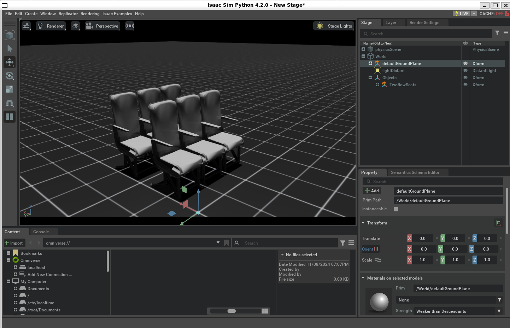
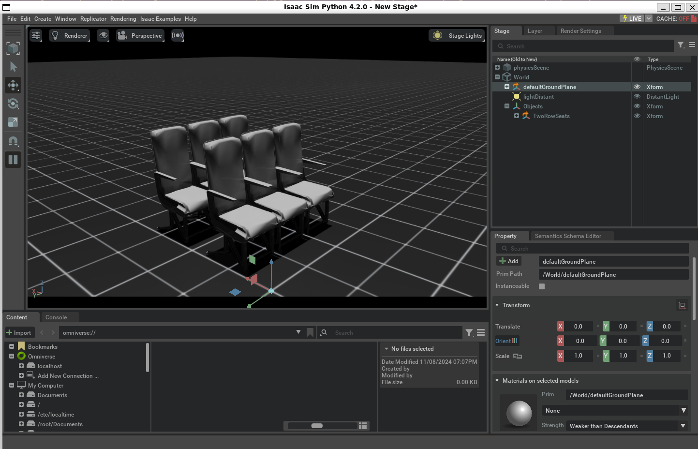
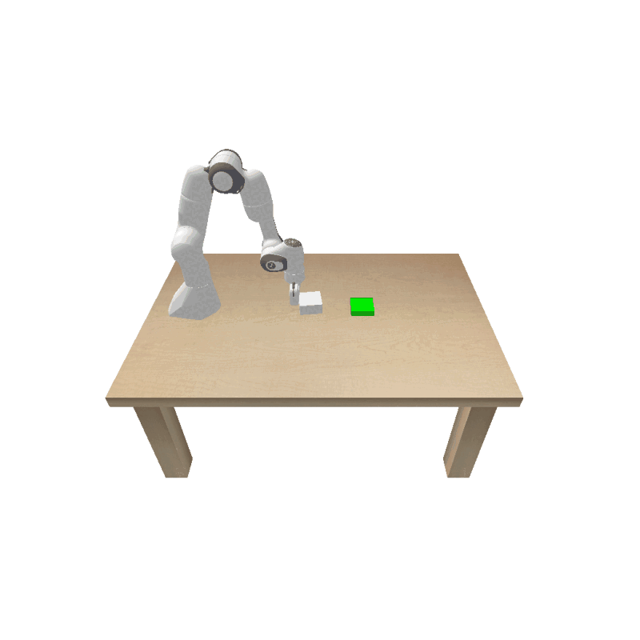
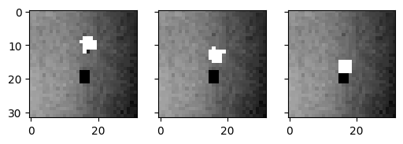
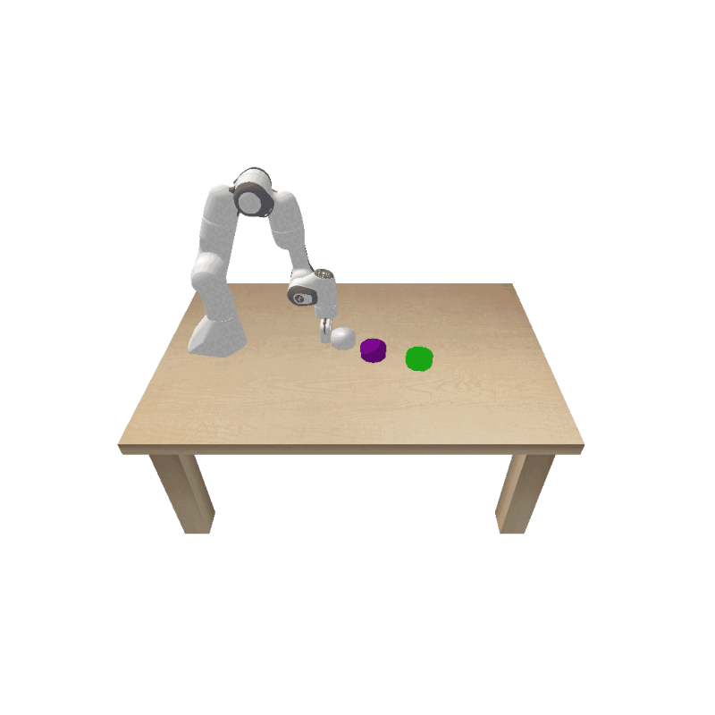

About Me
I'm Yuzhou Chen (陈禹舟), a dual-degree Master’s student in Electrical & Computer Engineering and Mechanical Engineering at the University of Michigan. I specialize in robotics, machine learning, and perception-driven control systems. I’ve led research in robot dynamics learning, deformable object modeling, and motion planning using transformer-based architectures and RL.

Education
University of Michigan, Ann Arbor
M.S. in Electrical and Computer Engineering• Focused on Machine Learning, GPA: 3.73/4.0
M.S.E. in Mechanical Engineering
• Focused on Robotics and Mechatronics, GPA: 3.73/4.0
Aug 2022 – May 2025
Jilin University, Changchun, China
B.E. in Mechanical Engineering• Focused on Robotics and Mechatronics, GPA: 87.1/100
Aug 2018 – Jun 2022
Skills
Programming Languages
Python, C++, HTML/CSS, C, SQL, MATLAB, JavaScript, Arduino
MLOps and Software Tools
Deep Learning: PyTorch, GPyTorch, TensorFlow
Data Science: NumPy, Pandas, OpenCV, matplotlib, scikit-learn
Robotics/Simulation: ROS, IsaacSim
RL Libraries: Gym, Stable-Baselines3
Cloud & DevOps: Docker, AWS EC2/S3, Git
Machine Learning and Optimization
NLP: LLM, Transformer, BERT, GPT
Generative Models: GANs, VAE, Diffusion Models
Probabilistic Models: GMM, GP
Computer Vision SoTA: SAM, DUST3R, Mask3D
Engineering & Simulation Tools
ANSYS / Workbench, Abaqus, SolidWorks, UG NX, CATIA, AutoCAD, Mathematica, LaTeX
Projects
3D Semantic Perception for Robotics in Simulated Aircraft Cabins
Developed a simulation pipeline in IsaacSim to enable robotic perception in cluttered cabin environments.
 

VAE-MPPI: Vision-Based Robot Control in Latent Space
Encoded state images into a latent space using a Variational Autoencoder (VAE), then applied Model Predictive Path Integral (MPPI) control in the latent space to drive the robot arm toward the desired state.
 Gaussian Process Based Robot pushing with Obstacle Avoidance
Implemented Gaussian Process to model uncertain dynamics and applied Model Predictive Path Integral (MPPI) control for obstacle-aware object pushing.
ArmLab 5-DOF Robotics Suite
Building autonomy for a 5-DOF robotic arm using computer vision, forward and inverse kinematics, and path planning to manipulate various objects.

BotLab Autonomous Mobile Robot
Differential-drive robot with 2D LiDAR for autonomous block transport and navigation, integrating SLAM and A-star planning.

Sequential Manipulation in PyBullet
Reasoning with pushing and grasping actions to build towers from objects in simulation using programmable primitives.

Autonomous Racing & Obstacle Avoidance
Control strategies for high-speed racing with embedded obstacle avoidance mechanisms.